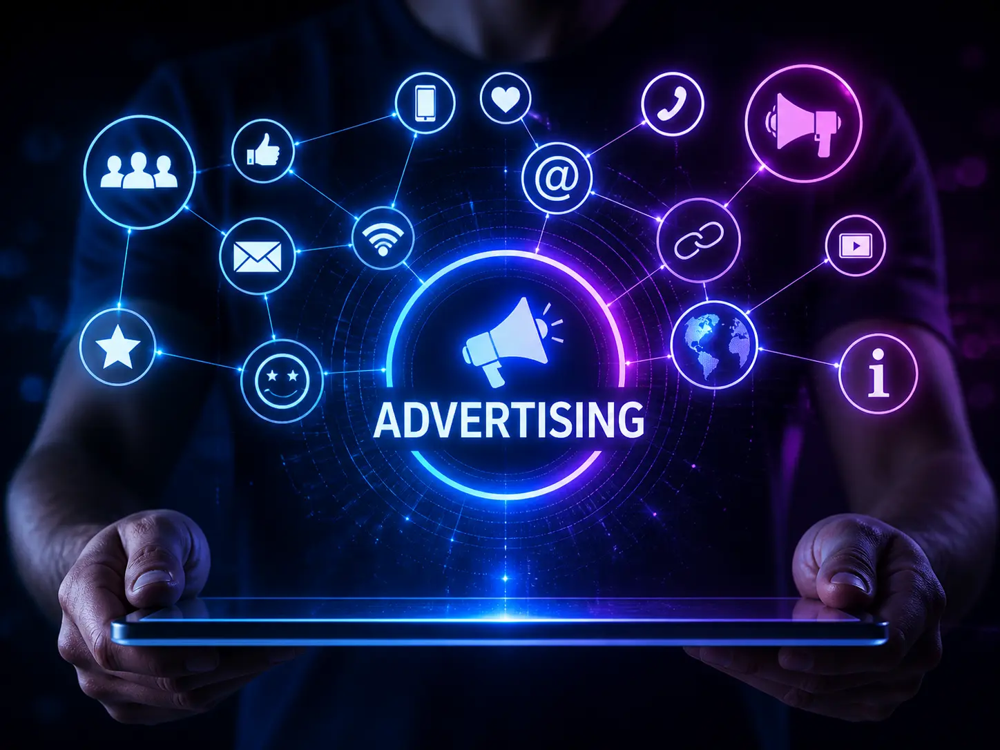

Smart Advertising

Smart advertising connects media spend with message clarity, landing page quality, analytics, and optimization discipline. NewWavetrhy s.r.o. builds advertising systems designed to create measurable acquisition without wasting budget on disconnected tactics.
The service looks beyond the ad account. We review the full path from search intent or social attention to landing page response, tracking quality, offer clarity, and reporting discipline. That makes optimization more practical because every performance issue has a clearer place to investigate.
Service overview
This service covers the paid acquisition layer: search advertising, paid social support, landing page direction, conversion optimization, and reporting. The goal is to make advertising easier to understand, improve, and scale responsibly.
What this service solves
- Ad spend that brings traffic but not enough qualified demand
- Search and social campaigns managed without shared funnel logic
- Landing pages that do not match the promise of the campaign
- Conversion tracking that makes performance difficult to interpret
- Optimization decisions based on platform noise rather than business relevance
What is included
- Paid acquisition audit and campaign structure review
- Search advertising and paid campaign planning
- Landing page conversion recommendations
- CRO priorities for offer, copy, layout, and CTA flow
- Analytics and event tracking recommendations
- Reporting rhythm focused on decisions, not vanity metrics
How we approach it
Audit the acquisition system
We review media structure, landing pages, tracking, creative, offer fit, and reporting quality.
Rebuild the path to conversion
We align search, social, retargeting, page logic, and measurement around a clearer buyer journey.
Optimize by constraint
We identify whether performance is limited by audience, offer, message, page, tracking, or budget allocation.
Expected business impact
- More controlled advertising structure and budget discipline
- Improved alignment between campaigns and landing pages
- Clearer reporting for founders, marketers, and leadership teams
- Better testing rhythm across messages, channels, and conversion paths
- A practical system for improving paid acquisition over time
FAQ
Is this the same as performance marketing?
It is the advertising-focused part of performance marketing: media structure, pages, tracking, and optimization.
Can you help before we start spending?
Yes. Building structure before launch often prevents expensive mistakes.
Do you guarantee ROAS or leads?
No. We do not promise numbers we cannot fully control. We build a disciplined system for measurable improvement.
Which platforms can this cover?
The service can cover Google Ads, Meta Ads, retargeting, and other paid channels depending on the target audience.
Make every advertising decision easier to explain.
Share your current campaigns, page path, and reporting gaps. We will help identify where advertising can become sharper.